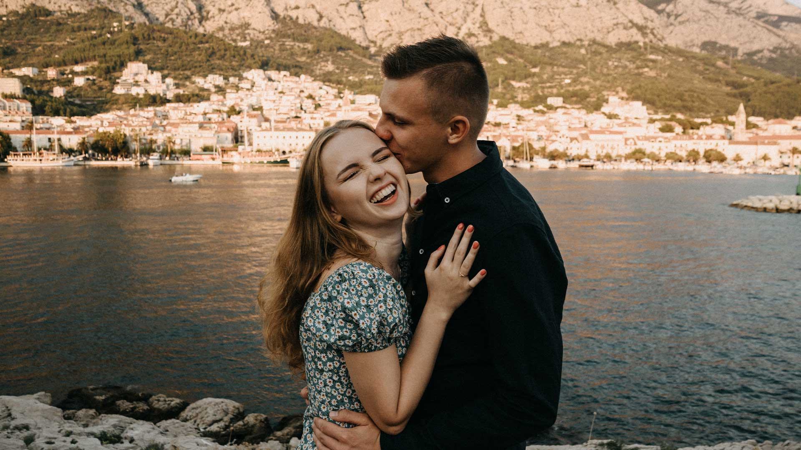
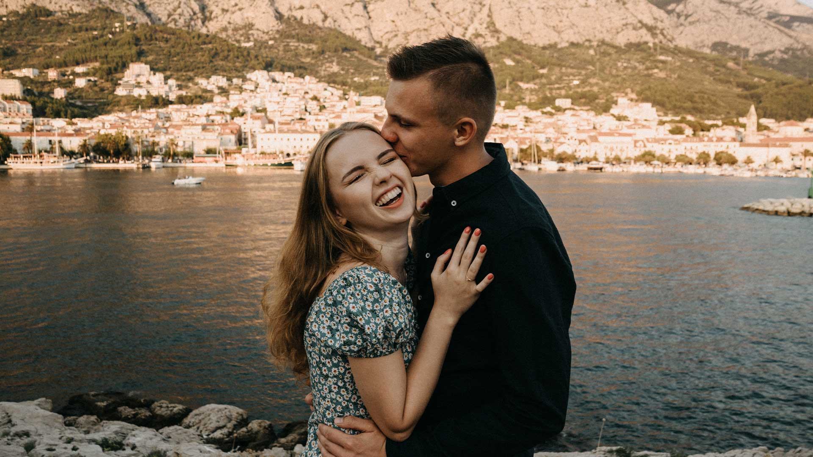

PORTRETI
Svaki portret u datom trenutku prikazuje vaše duhovno i tjelesno stanje, zaleđeno u djeliću sekunde. Na mojim fotografijama svaki djelić tog stanja prikazan je do savršenstva. Pokažimo zajedno kako izgleda vaš portret kroz ono što vi volite raditi u svakodnevnom životu. Bilo da se radi samo o licu ili prikazu cijelog tijela kroz koji se vidi vaše raspoloženje koje upotpunjuje portret.
 
